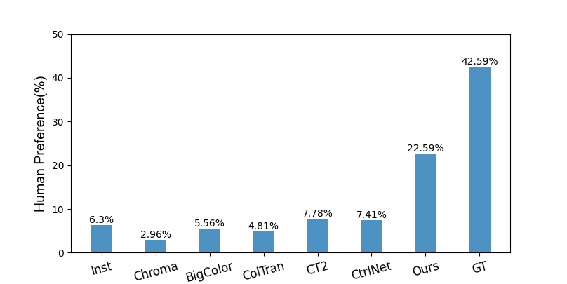

Evaluations
Qualitative

Qualitative comparisons among 1)GAN-based method: InstColor, ChromaGAN, BigColor, 2)Transformer-based method: ColTran, CT2, 3)Diffusion-based method: ControlNet and Ours.

Colorizing grayscale images offers an engaging visual experience. Existing automatic colorization methods often fail to generate satisfactory results due to incorrect semantic colors and unsaturated colors. In this work, we propose an automatic colorization pipeline to overcome these challenges. We leverage the extraordinary generative ability of the diffusion prior to synthesize color with plausible semantics. To overcome the artifacts introduced by the diffusion prior, we apply the luminance conditional guidance. Moreover, we adopt multimodal high-level semantic priors to help the model understand the image content and deliver saturated colors. Besides, a luminance-aware decoder is designed to restore details and enhance overall visual quality. The proposed pipeline synthesizes saturated colors while maintaining plausible semantics. Experiments indicate that our proposed method considers both diversity and fidelity, surpassing previous methods in terms of perceptual realism and gain most human preference.
BibTex Code Here